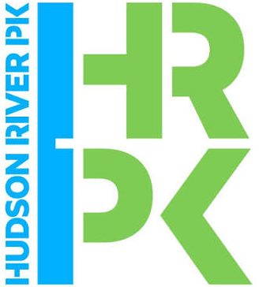

Go to
Colour by
Detail — 2 M
Point size
Height band — 0–12 m
View
basemap © OpenStreetMap contributors · survey © ASAS Labs



Pier 40 to Pier 25, Tribeca. Two survey runs, out and back, merged into one georeferenced point cloud.
